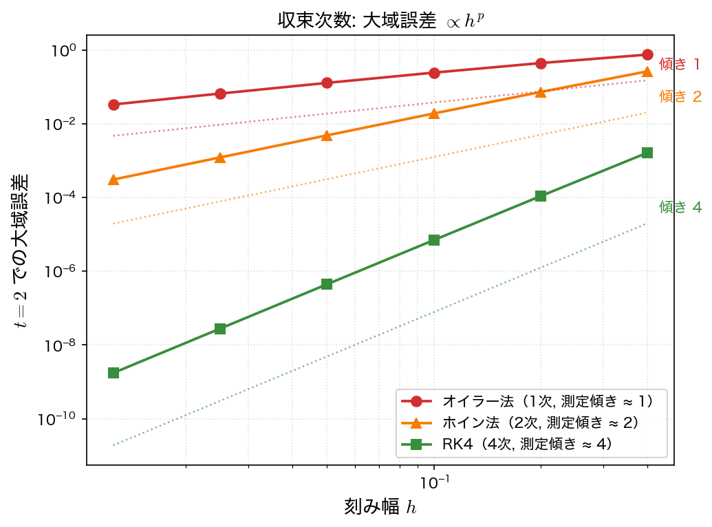

精度と収束次数
数値解法を選ぶとき、最も基本的な指標が収束次数（order of accuracy）である。刻み幅 \(h\) を小さくしたときに誤差がどれだけ速く小さくなるかを表し、これまで「1次精度」「2次精度」「4次精度」と呼んできたものの正体である。このページでは、誤差の種類を整理し、収束次数を数値実験で測る方法を示す。
局所打ち切り誤差と大域誤差
誤差には2つの段階がある。
- 局所打ち切り誤差（local truncation error）: 厳密解の上から出発して1ステップだけ進めたときに生じる誤差。テイラー展開で切り捨てた項に由来する。
- 大域誤差（global error）: 初期値から区間全体を進んだ後の、ある時刻での厳密解との差。実際に知りたいのはこちらである。
両者は次数が1つずれる。区間 \([t_0, t_{\text{end}}]\) を進むには \(N = (t_{\text{end}} - t_0)/h \propto 1/h\) ステップ必要なので、局所誤差 \(O(h^{p+1})\) が約 \(N\) 回積み重なり、大域誤差は
となる。局所打ち切り誤差が \(O(h^{p+1})\) の解法は、大域誤差が \(O(h^p)\) の \(p\) 次精度である。
| 手法 | 局所打ち切り誤差 | 大域誤差 | 次数 \(p\) | 1ステップの \(f\) 評価 |
|---|---|---|---|---|
| 前進オイラー法 | \(O(h^2)\) | \(O(h)\) | 1 | 1 |
| ホイン法（RK2） | \(O(h^3)\) | \(O(h^2)\) | 2 | 2 |
| 古典的 RK4 | \(O(h^5)\) | \(O(h^4)\) | 4 | 4 |
次数 \(p\) と誤差の振る舞い
大域誤差を \(E(h)\) とすると、\(h\) が十分小さいとき
と書ける（\(C\) は問題と手法で決まる定数）。この関係から、次数を測る2つの方法が導ける。
方法1：刻みを半分にしたときの誤差比
\(h\) を半分にすると、
つまり誤差比が \(2^p\) になる。1次精度なら \(2\)、2次精度なら \(4\)、4次精度なら \(16\) である。刻みを半分にしたとき誤差が何分の1になるかを見れば、次数が読み取れる。
方法2：両対数プロットの傾き
\(E(h) \approx C h^p\) の両辺の対数をとると
すなわち、横軸 \(\log h\)・縦軸 \(\log E\) のグラフ上で傾き \(p\) の直線になる。複数の \(h\) で誤差を測って両対数プロットし、直線の傾きを読めば次数が分かる。
サンプルコード
例題1（\(y' = y - t^2 + 1\)、厳密解あり）について、\(h = 0.2, 0.1, 0.05, 0.025, 0.0125\) と半分ずつ刻みを変え、各手法の \(t = 2\) での大域誤差と、直前の \(h\) からの誤差比を表示する。euler_step と rk4_step はオイラー法・RK4のサンプルの関数をそのまま写したもので、新たに加えるのはホイン法の heun_step だけである。\(t = 2\) まで解く関数 euler_at2・heun_at2・rk4_at2 は、ループの中で呼ぶ step 関数の 1 行だけが違う。
#include <stdio.h>
#include <math.h>
/* 例題1: y' = y - t^2 + 1, y(0) = 0.5, t in [0,2] */
/* 厳密解: y(t) = (t+1)^2 - 0.5 e^t */
double f(double t, double y) { return y - t*t + 1.0; }
double exact(double t) { return (t+1.0)*(t+1.0) - 0.5*exp(t); }
/* 前進オイラー法の1ステップ: y_n から y_{n+1} を返す */
double euler_step(double t, double y, double h)
{
return y + h*f(t, y);
}
/* ホイン法の1ステップ: 始点の傾きと、予測した終点での傾きを平均する */
double heun_step(double t, double y, double h)
{
double k1 = f(t, y); /* 予測子: 始点の傾き */
double k2 = f(t + h, y + h*k1); /* 予測した終点での傾き */
return y + h/2.0*(k1 + k2); /* 修正子: 2つの傾きの平均 */
}
/* 古典的 RK4 の1ステップ: y_n から y_{n+1} を返す */
double rk4_step(double t, double y, double h)
{
double k1 = f(t, y);
double k2 = f(t + h/2.0, y + h/2.0*k1);
double k3 = f(t + h/2.0, y + h/2.0*k2);
double k4 = f(t + h, y + h*k3);
return y + h/6.0*(k1 + 2.0*k2 + 2.0*k3 + k4);
}
/* 前進オイラー法で t=0 から t=2 まで解き、y(2) を返す */
double euler_at2(double h)
{
int N = (int)(2.0/h + 0.5);
double y = 0.5;
for (int i = 0; i < N; i++) {
double t = i*h;
y = euler_step(t, y, h);
}
return y;
}
/* ホイン法で t=0 から t=2 まで解き、y(2) を返す */
double heun_at2(double h)
{
int N = (int)(2.0/h + 0.5);
double y = 0.5;
for (int i = 0; i < N; i++) {
double t = i*h;
y = heun_step(t, y, h);
}
return y;
}
/* RK4で t=0 から t=2 まで解き、y(2) を返す */
double rk4_at2(double h)
{
int N = (int)(2.0/h + 0.5);
double y = 0.5;
for (int i = 0; i < N; i++) {
double t = i*h;
y = rk4_step(t, y, h);
}
return y;
}
int main(void)
{
double hs[] = {0.2, 0.1, 0.05, 0.025, 0.0125};
int M = sizeof(hs)/sizeof(hs[0]);
double y2 = exact(2.0); /* 厳密解 y(2) */
FILE *fp = fopen("accuracy.dat", "w"); /* 作図用データ */
if (fp == NULL) { perror("accuracy.dat"); return 1; }
fprintf(fp, "# h err_euler err_heun err_rk4\n");
printf(" h Euler err ratio Heun err ratio RK4 err ratio\n");
printf("-------------------------------------------------------------------------\n");
double pe = 0, ph = 0, pr = 0;
for (int i = 0; i < M; i++) {
double ee = fabs(euler_at2(hs[i]) - y2);
double eh = fabs(heun_at2(hs[i]) - y2);
double er = fabs(rk4_at2(hs[i]) - y2);
fprintf(fp, "%.10e %.10e %.10e %.10e\n", hs[i], ee, eh, er);
printf("%9.4f %10.3e", hs[i], ee);
if (i) printf(" %6.2f", pe/ee); else printf(" -- ");
printf(" %10.3e", eh);
if (i) printf(" %6.2f", ph/eh); else printf(" -- ");
printf(" %10.3e", er);
if (i) printf(" %6.2f", pr/er); else printf(" -- ");
printf("\n");
pe = ee; ph = eh; pr = er;
}
fclose(fp);
return 0;
}
コンパイル・実行:
実行結果：
h Euler err ratio Heun err ratio RK4 err ratio
-------------------------------------------------------------------------
0.2000 4.397e-01 -- 7.242e-02 -- 1.089e-04 --
0.1000 2.420e-01 1.82 1.890e-02 3.83 6.990e-06 15.59
0.0500 1.275e-01 1.90 4.820e-03 3.92 4.421e-07 15.81
0.0250 6.550e-02 1.95 1.216e-03 3.96 2.779e-08 15.91
0.0125 3.321e-02 1.97 3.054e-04 3.98 1.742e-09 15.96
誤差比に注目する。刻みを半分にするたびに、オイラー法は約 \(2\) 倍（\(\to 1.97\)）、ホイン法は約 \(4\) 倍（\(\to 3.98\)）、RK4 は約 \(16\) 倍（\(\to 15.96\)）小さくなっている。これはそれぞれ \(2^1, 2^2, 2^4\) で、次数 \(1, 2, 4\) をはっきり裏づける。刻みを細かくするほど比は理論値に近づいている（\(h\) が大きいうちは高次の項が残って比がずれる）。

可視化
accuracy.c は表を標準出力に出すのと同時に、同じ値を accuracy.dat にも書き出す（1列目が \(h\)、2〜4列目がオイラー法・ホイン法・RK4 の \(t=2\) での大域誤差）。収束次数は両対数プロットの傾きとして読むので、np.polyfit で傾きも出しておく。
import numpy as np
import matplotlib.pyplot as plt
h, e_euler, e_heun, e_rk4 = np.loadtxt("accuracy.dat", unpack=True)
fig, ax = plt.subplots(figsize=(6.5, 5))
for err, label, marker in ((e_euler, "Euler", "o"),
(e_heun, "Heun", "s"),
(e_rk4, "RK4", "^")):
slope = np.polyfit(np.log(h), np.log(err), 1)[0]
ax.loglog(h, err, marker + "-", ms=5, label=f"{label} (slope {slope:.2f})")
for p in (1, 2, 4): # 傾き 1, 2, 4 の基準線
ax.loglog(h, h ** p, "k:", lw=1)
ax.set_xlabel("step size $h$")
ax.set_ylabel("global error at $t = 2$")
ax.set_title("the slope of the line is the order of accuracy")
ax.grid(alpha=0.3, which="both")
ax.legend()
fig.tight_layout()
fig.savefig("accuracy.png", dpi=150)
plt.show()
実行:
np.polyfit が返す傾きは、表の誤差比を \(\log_2\) したものと同じ情報である。比の列（\(1.97, 3.98, 15.96\)）と傾き（\(0.90, 1.95, 3.97\)）は \(2^{\text{傾き}} \approx \text{比}\) の関係にある。
コストと精度
RK4 は1ステップで \(f\) を4回評価するため、「オイラー法の4倍コストがかかるのでは」と思うかもしれない。しかし目標精度に達するための総コストで比べると、高次の手法が圧倒的に有利である。
たとえば \(t = 2\) で誤差 \(10^{-6}\) 程度を達成したいとする。上の表から、
- オイラー法（1次）: 誤差は \(h\) に比例。\(h = 0.0125\) でも誤差は \(3\times10^{-2}\) にすぎず、\(10^{-6}\) には \(h\) をさらに \(3\times10^4\) 倍細かく（ステップ数 \(\sim 10^6\)）する必要がある。
- RK4（4次）: \(h = 0.1\) ですでに誤差 \(7\times10^{-6}\)。\(h = 0.05\)（40ステップ・\(f\) 評価160回）で \(4\times10^{-7}\) に達する。
\(f\) の総評価回数で見ると、RK4 はオイラー法より何桁も少ない計算で同じ精度に到達する。「1ステップを重くしてでも次数を上げる」方が、全体としてははるかに高効率なのである。これが、実務で RK4 をはじめとする高次法が標準的に使われる理由である。
ただし次数がすべてではない。刻みを大きくしすぎると高次の手法でも誤差が増えるし、硬い（stiff な）問題では安定性の制約から陽的解法では刻みを小さくせざるを得ない。次数（精度）・安定性・コストのバランスで手法を選ぶ——これが第5回・第6回へと続く視点である。